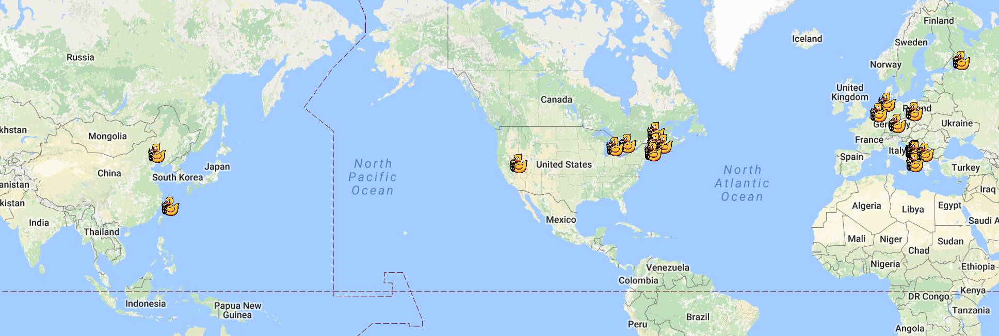
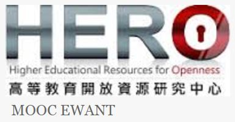
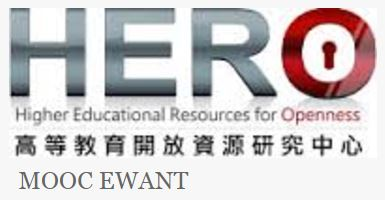

|
Duckietown Summber School 2017
|
|
The Supervisors
 Massachusetts Institute of Technology - MIT 2.166: Where it all started! The first Duckietown class was at MIT in 2016 National Chiao Tung University The "first branch of Duckietown" was started in 2016 in NCTU led by Prof Nick Wang Toyota Technological Institute at Chicago - Matthew Walter's graduate class at TTIC ETH Zurich - Frazzoli and Censi's graduate class at ETH Zurich University de Montreal - Graduate class taught by Paull at U de M |
|
The Participants
Chosun University, Korea - Prof. Woosuk Sung's course Petra Christian University, Indonesia - Prof. Resmana Lim's Mobile Robot Design Course National Tainan Normal University, Taiwan - Prof. Jen-Jee Chen's Vehicle to Everything (V2X) Course. Yuan Zhu University, Taiwan - Prof. Kan-Lin Hsiung's Control course National Chiao Tung University, Taiwan - Future teaching assistants in the undergraduate course "Creative Software Project" led by Prof. Nick Wang in Fall 2017. National Chiao Tung University, Taiwan - Prof. Yon-Ping Chen's Dynamic system simulation and implementation National Taichung First Senior High School, Taiwan - Outreach for very young Duckietown engineers (high school students) |
|
Program
Professional Training - The 3-day course includes both hardware, such as Duckiebot assembly, soldering of PWM, 3D printing, as well as software developments: Robot Operation System (ROS), Python, Jupyter Notebook, and OpenCV. We will also cover the priniciples and processing steps of autonomous lane following.
Learning by Doing - Each section will include a 15-20 minute lecture, followed by hand-on section to finish a few specific tasks. Evaluation - Each participant needs to finish the tasks in each section, and forms small group for final presentation (5 minute spotlight and a live demo or video. |
|
The Organizing Committee: Student-Initialed, Student-Run
|
|
Q & A
- Do I get a certificate (or official credit) after I finish the summer school?
- What's the prerequisites?
- Should I prepare my own hardware?
- Can I bring a Duckiebot home?
- Can I participate the summer school? What's the expenses for each participant?

|
 

|
Reference and Links:
|
| © NC Lin | Web Templates by gwsolution |